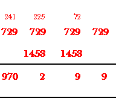
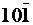
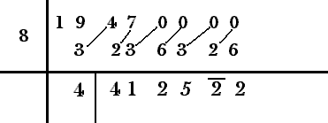
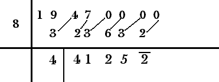
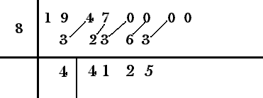
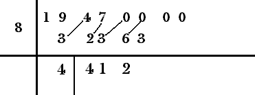
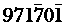

Like many other places, here too, the use of mishrank makes things easier. Let us take an example. Let us find the cube of "99". Note that 93 = 729. The normal way would be

However, if we use mishrank, the same problem can easily be solved as follows.
99 can be represented using mishrank as 
Here, we may consider '10' similar to the tens digit in the previous examples. Hence, the common ratio is (-1) / 10.
103 = 1000.
1000 x (-1)/10 = -100.
-100 x (-1) / 10 = 10
10 x (-1)/10 = -1
So, proceeding as usual, we get

Here, we write -1 using mishrank. In the next step, we get

i.e., 20+10 = 30 => carry = 3.
Then, continuing the addition, we get

i.e., -200 + -100 + 3 = -297. The units digit '7' is written in mishrank form and '-29' is taken as the negative carry. Thus, finally we get

Eliminating the negative digits from, we get 970299 as the result.